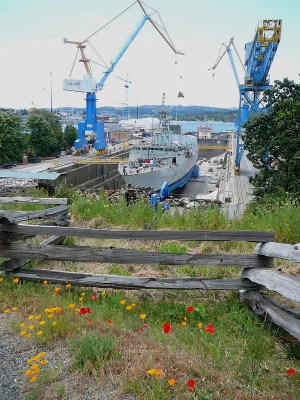

Environment
It is the goal of the Esquimalt Graving Dock (EGD), in partnership with the ship repair industry, to be the premier ship repair, construction and maintenance facility on the west coast of North America.
The Esquimalt Graving Dock and its users recognize that responsible environmental management is an integral part of attaining that goal. In order to ensure business at the facility is conducted in an environmentally responsible manner, the Esquimalt Graving Dock has implemented an Environmental Management System (EMS) certified to the internationally recognized ISO 14001 EMS standard.
ISO 14001
The ISO 14001 certification is an internationally recognized standard for the development and implementation of an Environmental Management System. Qualifying for this recognition in 2001, the Esquimalt Graving Dock has implemented this management system to help identify and prioritize environmental issues on site.
Since certification in 2001, this environmental management system has provided the framework for the implementation of successful, cost effective environmental programs and initiatives. These programs help ensure on-site businesses conduct their operations in a conscientious manner by reducing environmental impacts and demonstrating consideration for the health, safety and well being of on-site users and the surrounding community.
Environmental Policy
The Esquimalt Graving Dock's commitment to environmental protection is outlined in the EGD Environmental Policy.
By signing the EGD Environmental Policy, upper management has made a commitment towards the prevention of pollution, the protection of the natural environment and the compliance with applicable environmental regulations and standards.
Environmental Best Management Practices
All of those conducting business at the Esquimalt Graving Dock are expected to operate in an environmentally responsible manner. This includes compliance with applicable environmental regulations and standards. In support of this, EGD has developed a comprehensive set of Environmental Best Management Practices (EBMPs).
EBMPs are ways of reducing and preventing the discharge of pollutants into the environment through good housekeeping, maintenance, materials management, communications, work practices and technology. Most EBMPs are a form of source control for pollution prevention. Their implementation can minimize the production of waste and pollution from activities such as paint removal and surface preparation, painting, engine maintenance and materials handling.
To obtain a copy of the EGD Environmental Best Management Practices, please contact the Environmental Coordinator.
Articles of Interest
- Keeping It Simple: Bubble Curtain Saves Fish, Seals, and Valuable Time (2003)
- EGD: A Good Environmental Citizen (2002)
- Lowering the Boom on Oil Spills (2000)
- EGD: Leading the Way with ISO 14001 (2000)
Environmental Coordinator
If you have any questions regarding the Environmental Policy or the environmental programs at the Esquimalt Graving Dock, please contact the Environmental Coordinator at:
Email: melissa.piasta@pwgsc-tpsgc.gc.ca
Telephone: 250-363-3961